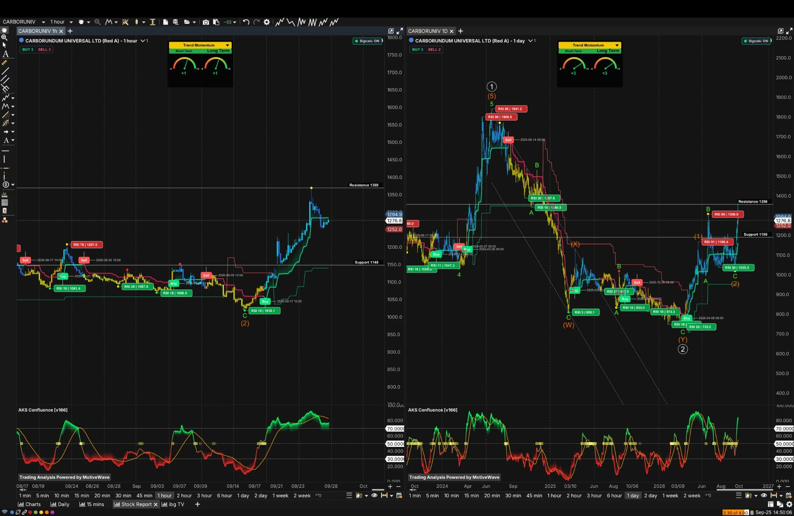

● FY26 PAT −33.5% YoY on Awuko/Foskor exceptionals (₹135 Cr)
● Pledge: 0% — confirmed, two filings
● Street: Hold/Reduce-leaning, targets below CMP
01
Company Overview
What They Do
Carborundum Universal Limited (CUMI), part of the Murugappa Group, established 1954, turns minerals into three core product families: abrasives (grinding wheels, coated and superabrasives), technical ceramics & refractories (wear/heat/corrosion/ballistic protection materials) and electrominerals (fused alumina, silicon carbide grains, zirconia). It serves automotive, metalworking, construction, steel, aerospace and energy customers (including solid-oxide fuel cells), with an increasing push into semiconductor equipment and power electronics. Manufacturing spans India, Russia, USA, Germany and Australia, serving customers in 60+ countries.
FY26 consolidated revenue was ₹52,063mn (+6–7% YoY), up from ₹48,942mn (FY25) and ₹47,022mn (FY24); standalone revenue crossed ₹3,000 Cr in FY26. Growth was broad-based across all three segments, with Ceramics the clear outperformer (+9.3% YoY vs Abrasives +5.1% and Electrominerals +3.7%).
Key Competitive Advantage: Vertical integration — a “mines-to-market” model with captive raw materials and captive power — combined with application-engineering depth and multi-country manufacturing, enabling progressive migration into high-purity and specialty materials. Management is deliberately shifting the mix from commodity fused alumina/SiC toward treated grains, alumina-zirconia specialties, high-purity SiC, metallised cylinders and advanced ceramics for semiconductor wafer-fab equipment and power electronics — a shift targeted to matter meaningfully by 2030, but rated only 3/5 on rate-of-change today (see Product-Mix panel).
Revenue Mix (FY26, Consolidated, External Sales)
Product-Mix Shift Toward Higher-Value Segment
Rated 3 / 5
■■■■■
The shift toward treated grains, alumina-zirconia specialties, high-purity SiC, metallised cylinders and advanced ceramics for semiconductor wafer-fab/power-electronics is visible in Ceramics segment outperformance (+9.3% vs the group's ~6-7%) but not yet dominant in the P&L — the source note itself rates the pace of this transition only 3/5 today.
Semiconductor SiC — temper the narrative: CUMI's high-purity SiC (HPSiC) plant is confirmed pilot-scale, with “client qualification underway” for power electronics/semiconductor/renewable-energy sectors — named sectors, not named customers. An independent source (Decoding Multibaggers) is explicit that this is a “strategic bet, not a proven revenue stream,” and that CUMI sits upstream of players like Wolfspeed/Coherent, producing SiC powder rather than finished wafers — materially lower value-add than an “supplies Applied Materials directly” framing implies. Both framings (bullish X/Twitter narrative vs sober independent read) are presented in this report; the tension between them is real and unresolved. Separately, CUMI acquired 100% of Silicon Carbide Products, Inc. (SCP, USA) for ₹56 Cr — historically an industrial/abrasive-grade SiC producer; it is not confirmed whether SCP is the same vertical as the semiconductor-grade SiC pilot.
02
Competitive Advantage (Moat) Analysis
Dimension
Rating
Commentary
Brand Strength
Strong
Strong recognition in Indian industrial markets under the Murugappa Group umbrella — a multi-decade franchise across abrasives, ceramics and electrominerals with 60+ export countries.
Network Effects
Weak / Limited
Per the source research, network effects are limited — this is a materials/components supplier business model, not a platform.
Switching Costs
Moderate-to-High
Moderate-to-high in application-engineered/qualified products, especially ceramics and semiconductor-adjacent materials, where customer qualification cycles create real switching friction once a part is designed in.
Cost Advantage
Yes — Structural
Vertical integration (captive minerals + captive power) provides a structural cost edge versus pure converters who buy raw material and power on the open market — the “mines-to-market” model is the core of the moat framing.
Patents / Proprietary Tech
Present, Growing — Early Stage
Present and growing in high-purity SiC, metallised ceramics and specialty grains, with qualification cycles creating barriers to entry — tempered by the gap-fill finding that the flagship SiC business is confirmed pilot-scale with client qualification still underway, not yet a proven, revenue-generating moat.
What This Moat Does NOT Protect Against
Cyclical demand in core end-markets (auto, steel, construction) that vertical integration cannot smooth away. Margin surprises from overseas operations — already materialized once via the Awuko/Foskor wind-downs (see §03). Long qualification timelines on the semiconductor/high-purity ramp mean the optionality could take years to show up in reported numbers, and a triple-digit trailing P/E is already pricing in a meaningful part of that transition succeeding.
Synthesis: The durable part of the moat is vertical integration + application-engineering depth, not yet the semiconductor story — that remains a genuine but early-stage optionality. India's abrasives market itself is sized with real uncertainty (estimates USD ~0.5–2.3bn depending on definition, ~5.8–6.9% CAGR over 5–7 years) — a wide enough range that market-size alone should not anchor a valuation thesis; the moat has to carry the weight instead.
CUMI Awuko Abrasives GmbH (Germany): sustained losses led to a voluntary wind-up decision. Foskor Zirconia (Pty) Ltd (South Africa): escalating costs, FX volatility and inconsistent profitability made the business unsustainable; it is being wound down/impaired. One source figure of “₹1,346 crore” appears to be a typo for ₹134.6 crore — the reconciled combined exceptional charge used in this report is ₹135 Cr, which is consistent with the FY26 PAT decline math.
Important framing: FY26 was revenue growth with earnings compression from one-offs, not “growth with margin expansion.” FY26 PAT attributable to owners was ₹1,947mn (EPS ₹10.30) vs FY25's ₹2,927mn (EPS ₹15.55) — a real YoY decline, driven largely (though not entirely) by the exceptional items rather than core operating deterioration. Effective tax rate was elevated to the mid-40% range in FY26 (exceptionals/mix effects) vs a normalized historical 25–30%; no structural tax-optimization red flags were identified.
Quarterly EPS Trail — FY26 Reconciled
Q1 FY26 (Jun'25)EPS ₹3.30down from ₹5.90 Q1 FY25; PAT ₹60.4–62 Cr, minor unresolved conflict across sources
Q3 FY26 (Dec'25)EPS ₹4.02 (+120% YoY)Matches user's own MarketSmith screenshot exactly — good cross-confirmation
Q4 FY26 (Mar'26)EPS −₹0.93Consolidated net loss ₹40.01 Cr — the Awuko/Foskor exceptional quarter
Q1 FY27 (Jun'26)EPS ₹4.04 (+23% YoY)Sales ₹1,426.6 Cr (+17%) — first quarter of new fiscal year, recovery visible
Foskor wind-down expected complete ~Q1–Q2 FY27; Awuko is effectively winding down/closed. Both are described as “on track” per the Q4 earnings call — but neither is yet fully closed out, leaving residual execution risk.
04
Overall Sentiment & Momentum Prediction
Key Watch-Item
⚠ Valuation vs Sober Semiconductor Timeline
Trailing P/E in the 97–128x range prices in meaningful specialty/semiconductor optionality that independent research characterizes as pilot-scale, not yet revenue-generating. If the market's narrative outruns qualification-cycle reality, valuation compression is the mechanism that would correct it.
Overall Sentiment
BULLISH-TO-NEUTRAL narrative-driven upside bias
X/Twitter sentiment (~12-month window) centres on semiconductor/advanced-ceramics optionality — high-purity SiC powders, ceramic parts for wafer-fab equipment, comparisons to Japanese ceramics re-ratings (e.g. Toto). Counterpoints raised even by that bullish crowd: triple-digit trailing P/E, core-abrasives cyclicality, and semiconductor revenue still early-stage. Street consensus is more cautious than retail/X sentiment — see §12.
Momentum Prediction
BUY 3 / BUY 3 — BOTH TIMEFRAMES
MotiveWave's Trend Momentum panel reads BUY 3 on BOTH the daily AND hourly charts — a genuinely strong, broadly-confirmed short- and long-term momentum alignment that is relatively unusual and worth calling out explicitly (see §18 for the full Elliott Wave read). But note: the rally off the ₹735 low is already a >70% move, so some of the easy technical reward may be behind rather than ahead.
Framing note: This is a stock where the technical picture (strong, confirmed) and the fundamental/valuation picture (rich, transition-dependent) are pulling in different directions. Sentiment will likely re-rate on evidence of the semiconductor/specialty pipeline converting to disclosed revenue with named customers, not on the currently-strong price action alone.
05
Sector Market Size
India abrasives market — estimates vary widely by definition (USD ~0.5–2.3bn range for recent base years, per source note). This wide range is a genuine sizing uncertainty, deliberately not collapsed to a single number. Projected CAGR ~5.8–6.9% over the next 5–7 years, driven by manufacturing (PLI schemes), automotive (incl. EV components), infrastructure and precision/superabrasives demand.
06
Shareholding — 3 Qtrs
Category
Dec'25
Mar'26
Jun'26
Δ
Promoters
38.90%
38.89%
38.89%
Stable
Mutual Funds
27.80%
27.75%
28.13%
▲ modest uptick
FII
10.98%
10.73%
11.13%
▲ upticking
Other DII/Institutions
~2.2%
~1.7%
~0.9–1.7%
Mixed
Retail & Others
~20.1%
~20.9%
~20.9%
Broadly stable
Promoter holding is rock-stable at ~38.9% across three quarters. Institutional ownership (MF + FII) is described as “healthy for a mid/small-cap industrial” and both categories ticked up modestly into Jun'26 — mild positive signal, not a dramatic re-rating in ownership.
07
Stock Performance
Period
Range
★ 1 Month
+10–15%
3 Months
+7–16%
6 Months
+65–77%
1 Year
+33–36%
YTD
~+49%
52-Wk High₹1,369Late Sep 2026
52-Wk Low₹735~23 Mar 2026 — matches Elliott Wave-2 low almost exactly
Sharp recovery from Mar 2026 lows (6M +65–77%). Has significantly outperformed Nifty Midcap/Smallcap over 6M/1Y and beaten large-cap benchmarks (Nifty 50/100) on YTD/1Y, per source note.
First quarter of FY27 shows clear sequential recovery after the Q4 FY26 exceptional-item loss — Q1 FY27 EPS ₹4.04 vs Q4 FY26 EPS −₹0.93 and vs Q1 FY26 EPS ₹3.30. Not yet a full-year confirmation, but directionally the strongest quarter in the reconciled FY26–27 trail.
Valuation & Balance-Sheet Tiles
Trailing P/E
97–128x
Three-way source spread — see §09 valuation note
Forward P/E (FY27E)
~35–50x
More reasonable if recovery materializes
P/S (TTM)
3.8–4.5x
Premium to many industrial peers
Debt / Equity
0.08–0.11
Conservative; net cash positive recent periods
Total Debt
~₹4bn order
Modest; MarketSmith LT Debt/Equity 1%
FY26 CFO
₹3,674mn
P/CFO elevated, mid-to-high 40s or higher
Inventory Turnover
~3.36x
Sharp improvement from ~1.88x prior year
MarketSmith Beta / U-D Vol
0.94 / 3.6
No of Funds 193 (+11.56%)
Annual P&L — FY24–FY26
Year
Revenue (₹mn)
PAT Attrib. (₹mn)
EPS (₹)
FY24
47,022
—
—
FY25
48,942
2,927
15.55
FY26
52,063
1,947
10.30
Quarterly Trend — FY26 & Q1 FY27 (MarketSmith)
Quarter
Sales (₹Cr)
EPS (₹)
%Chg
Dec-25 (Q3 FY26)
1,290.9
4.02
+120%
Mar-26 (Q4 FY26)
1,398.3
−0.93
−154%
Jun-26 (Q1 FY27)
1,426.6
4.04
+23%
Revenue Trend — FY24 to FY26 (₹ mn)
PAT Attributable — FY25 vs FY26 (₹ mn)
FY26 PAT decline (−33.5% YoY) driven largely by the ₹135 Cr Awuko/Foskor exceptional charge — see §03.
⚠ Growth with earnings compression — NOT growth with margin expansion: FY26 revenue grew +6–7% while PAT attributable fell 33.5% YoY (₹2,927mn → ₹1,947mn), driven largely by the Awuko/Foskor exceptional charge rather than core operating deterioration. Growth was broad-based, Ceramics-led; profitability was volatile because of one-offs, not because the underlying franchise weakened.
★ Operating leverage note: Electrominerals and parts of Ceramics carry meaningful fixed-cost/capacity characteristics (power-intensive, specialized equipment) — rising volume/utilization can expand margins once high-value products scale. Abrasives is more variable-cost. Inventory turnover improved sharply (~1.88x → ~3.36x), a genuine positive working-capital-discipline signal even in a weak earnings year.
09
Key Ratios — Industry-Contextualized
Trailing P/E — Three-Way Source Conflict Unresolved, presented as range
Screener.in (25 Sep 2026): CMP ₹1,278, Mkt Cap ₹24,347 Cr, P/E 97.1. Search-aggregate (24 Sep 2026): CMP ₹1,296.5, Mkt Cap ₹24,089.40 Cr, P/E 128.16. MarketSmith (user's own terminal): CMP ₹1,277.25 (−19.50, −1.50%), Mkt Cap ₹24,698.97 Cr, Sales ₹5,413.92 Cr (unclear if TTM or annual — flagged ambiguity), Shares in Float 11.62 Cr, LT Debt/Equity 1%, Book Value 6.34x, U/D Vol Ratio 3.6, Beta 0.94, No. of Funds 193 (+11.56%), Shares held by Funds 7.66 Cr (+0.03%). All three CMP/mkt-cap readings cluster closely but do not agree exactly; the P/E spread (97.1 vs 128.16) is meaningful — likely different as-of-times/TTM-EPS denominators. MarketSmith is treated as primary (most precise timestamp, user's own terminal) with Screener/aggregate as corroborating range — the spread is flagged explicitly rather than resolved.
P/CFO & Cash-Flow Quality Elevated
Mid-40s+ (Mkt Cap ÷ FY26 CFO ₹3,674mn)
Note: A high P/CFO alongside a 97–128x trailing P/E and a triple-digit forward multiple even after recovery means the market is pricing in substantial future cash-flow growth and quality premium, well above typical industrial averages. Inventory turnover improved sharply (~1.88x → ~3.36x latest period) — a genuine positive working-capital-discipline signal that partly offsets the cash-flow-multiple concern, since less capital is tied up per rupee of sales.
MarketSmith scores (user's own screenshot, 25 Sep 2026): Master Score B, EPS Rating 31 (POOR), Price Strength 85 (GOOD), Acc/Dis Rating A+, Group Rank 35 of 197 (GOOD) — a classic “price has already re-rated ahead of earnings quality” profile: strong technical/price and accumulation scores paired with a poor EPS rating, consistent with the FY26 earnings decline discussed above.
10
Management Metrics
MD Remuneration
₹4.17 Cr
Sridharan Rangarajan, MD, total remuneration (fixed + performance-linked variable) — “reasonable relative to PAT, not excessive by mid-cap industrial standards” per source note. Non-exec directors get sitting fees + profit-linked commission.
Management Tenure
Stable, Professional
MD Sridharan Rangarajan in role since ~mid-2023 (board since Aug 2023, MD role formalized 2025); previously senior finance/Group CFO roles within Murugappa/CUMI for many years. Chairman M.M. Murugappan long-standing. Business-unit heads typically multi-decade tenure. New CFO Sriram Seshadri appointed 7 Sep 2026 (very recent, fresh KMP change, not in the original research note).
Effective Tax Rate
Mid-40%
FY26 elevated to mid-40% range (exceptionals/mix effects) vs normalized historical 25–30%; no structural tax-optimization red flags apparent.
Turnaround / New Direction
EVOLUTIONARY, NOT A TURNAROUND
No wholesale management change; ongoing portfolio rationalization (exiting Awuko/Foskor) plus a deliberate shift toward higher-value specialty materials — described by the source note explicitly as “evolutionary improvement rather than a classic turnaround story.”
Board & Governance — Gaps Stated Explicitly
Board (partial, per gap-fill research): M.M. Murugappan — Chairman, Non-Executive. Sridharan Rangarajan — Managing Director. P.S. Raghavan — Non-Executive Independent Director. Sujjain Suresh Talwar — Non-Executive Independent Director since 9 May 2017, re-appointed for a second 5-year term from 9 May 2022. Aroon Raman — Director (designation not confirmed, likely independent, not verified). Sushil Kishor Bendale — Director (designation not confirmed). A complete board list with designations/tenure could not be fully verified — two directors' exact designations are unconfirmed.
Other governance data points: Auditor Price Waterhouse Chartered Accountants LLP confirmed conducting the FY26 review with no material misstatements found (implies a clean/unqualified opinion), but exact appointment date/tenure could not be confirmed. Pledge: 0% / no encumbrance — CONFIRMED by two separate company filings. SEBI action/insider trading: none found — stated as “not found,” not as “confirmed clean.” Litigation/contingent liabilities could not be sourced at annual-report note granularity — a genuine gap; no material/unusual litigation surfaced in news searches (a mild positive, not a substitute for actual disclosure). Related-party transactions confirmed (per Sep-2024 half-yearly filing, most recent found) with Coromandel International Ltd, E.I.D. Parry (India) Ltd and Cholamandalam MS General Insurance Co., all classified “Promoter and Promoter Group,” sale of goods or services, no intercorporate loans/guarantees identified — a more recent disclosure likely exists but was not located.
11
Company Guidance & Credibility Checklist
Guidance Tracking
Public quantitative guidance is limited. Commentary emphasizes sequential recovery, Ceramics strength, Electrominerals export performance, and the long-term specialty/semiconductor opportunity. Revenue growth has generally tracked or exceeded soft expectations recently; profitability has been more volatile due to one-offs (Awuko/Foskor). Capex continues at approximately ₹300 Cr annual range for capacity and high-value capabilities directionally — cross-checked against more precise gap-fill figures: ₹309 Cr spent in FY26, ₹400 Cr planned FY27, under a broader multi-year program targeting roughly ₹350 Cr/year.
Item
Detail
FY26 Capex
₹309 Cr spent
FY27 Capex (planned)
₹400 Cr
Multi-year program
~₹350 Cr/year broader target
Annual-range figure (source note)
~₹300 Cr — directionally consistent with the above
Management-Quality Red-Flag Checklist
Warning Sign
Present?
Competitive-displacement claim w/ named target
✗ No
Capacity built ahead of demand
✗ No
Capital-allocation clarity
✓ Present
External attribution w/o internal accountability
✗ No
Unrelated diversification
✗ No
Working-capital deterioration called "temporary"
✗ No — turnover actually improved
All six checklist items are favorable, per the source note — no red flags identified. Capital-allocation focus remains core + specialty materials, consistent with the mines-to-market vertical-integration thesis.
12
Street Consensus
Analysts Covering~6–9Recent consensus leaning Hold/Reduce/Underperform in several snapshots
Average Targets (earlier 2026)₹975–1,035Zone earlier in 2026, below prevailing price
Most Recent ActionPrabhudas Lilladher → ReduceTP ~₹986, May 2026 — after the rally, citing valuation
X / Social vs Street: X/retail sentiment is more optimistic/narrative-driven (momentum/story vehicle around semiconductor ceramics, willing to look through multiples). Street consensus is more cautious — Hold/Reduce-leaning with targets often below the prevailing price. This gap between retail narrative and analyst consensus is itself a key watch-item.
13
Share Volume & Profile
Recent Daily VolumeSeveral lakh sharesMulti-lakh prints around the breakout — MarketSmith shows Vol 279,245 (−8.30%) on 25 Sep
Volume vs Longer-Term AvgElevatedHigher than longer-term average on strong days
Institutional ParticipationSteady-to-RisingMF 28.13% Jun'26, FII 11.13% Jun'26 — both upticking
MarketSmith No. of Funds193+11.56% — shares held by funds 7.66 Cr (+0.03%)
Reading it: No single dramatic block-buy announcement dominates recent news. The volume/participation profile is consistent with steady institutional accumulation into strength rather than a single event-driven spike.
14
Sector Rotation
CUMI's sector — industrial materials / diversified industrials — typically tracks the broader capex and manufacturing cycle. As a vertically-integrated abrasives/ceramics/electrominerals supplier into auto, steel, construction and increasingly semiconductor-adjacent end-markets, order flow is a direct read on this phase.
Reading it: CUMI is the most diversified of the three, the only one with meaningful ceramics + electrominerals platforms opening semiconductor/energy optionality. Grindwell Norton runs higher margins/ROE on a narrower (pure abrasives) base; Wendt is a smaller, higher-ROE superabrasives specialist. CUMI's premium valuation has to be justified by the breadth of its optionality, not by best-in-class current profitability — FY26's exceptionals mean it is currently the group's weakest profitability print.
16
Risk Analysis
Category
Severity
Detail
Cyclical Demand
Medium
Core end-markets — auto, steel, construction — are cyclical; CUMI's abrasives and electrominerals segments are directly exposed to industrial-production swings even with vertical integration cushioning input costs.
International Operations / Margin Surprises
High — Already Materialized Once
Margin pressure from international operations has already materialized via the Awuko (Germany) and Foskor Zirconia (South Africa) wind-downs — a combined ₹135 Cr exceptional charge in FY26. Both wind-downs are described as “on track” but neither is fully complete, leaving residual execution risk (Foskor targeted ~Q1–Q2 FY27 completion).
Semiconductor / High-Purity Ramp Execution
Medium-High
Long qualification timelines are a genuine execution risk. The HPSiC business is confirmed pilot-scale with client qualification underway for named sectors, not named customers — independent research explicitly frames this as a “strategic bet, not a proven revenue stream,” upstream (powder, not wafers) of players like Wolfspeed/Coherent. The pre-prepared note's more bullish “Applied Materials-type customers” framing should be read against this more sober characterization.
Valuation Compression
High
Trailing P/E of 97–128x (source spread) prices in substantial growth/specialty-transition success. Sell-side consensus is Hold/Reduce-leaning with price targets often below the current price (₹870–1,111 range vs CMP ~₹1,277–1,297). If the growth/semiconductor narrative disappoints relative to the market's current pricing, valuation compression is a real risk.
Regulatory / ESG
Low-Medium
Environmental compliance for power-intensive electrominerals/ceramics processes, plus general trade-policy exposure given the multi-country manufacturing footprint (India, Russia, USA, Germany, Australia).
Debt / Financial
Low
D/E ≈0.08–0.11, conservative balance sheet, net cash positive in recent periods. Primary financial risk is earnings volatility (exceptional items), not balance-sheet stress.
Governance Disclosure Gaps
Medium
Two directors' exact board designations unconfirmed; litigation/contingent-liability detail not sourced at annual-report granularity; related-party transaction disclosure dates to a Sep-2024 filing, a more recent one likely exists but was not located. None of these are red flags in themselves, but they are genuine gaps in this report's own due diligence.
Competitive intensity: Domestic competition from Grindwell Norton and others, plus international players (e.g. 3M) in abrasives and ceramics. New abrasive/ceramic technologies are a structural industry-disruption watch-item over the medium term.
Economic risk: A broader manufacturing/capex slowdown in India or key export markets would compress volumes across all three segments simultaneously, given the shared exposure to industrial and construction end-markets.
Technical Analysis
17
Technical Ratings & Momentum
MarketSmith Ratings (25 Sep 2026 screenshot)
B
Master Score — Group Rank 35 of 197 (GOOD)
Price Strength (85, GOOD) and Acc/Dis Rating (A+) are both strong — the market has been actively accumulating and price has led. EPS Rating is only 31 (POOR) — earnings quality has lagged the price move, consistent with the FY26 exceptional-item-driven PAT decline discussed in §03/§08. This is a “price ahead of earnings” profile, not a broken stock, but it means the technical strength is not yet fully earnings-confirmed.
Synthesis: Both the daily AND hourly MotiveWave Trend Momentum panels read BUY 3 — genuinely strong, broadly-confirmed short- and long-term momentum alignment across timeframes, which is relatively unusual and worth calling out explicitly as a bullish technical signal (see §18 for full Elliott Wave detail).
MarketSmith Score Breakdown
EPS Rating
31
POOR
Price Strength
85
GOOD
Acc/Dis Rating
A+
GREAT
Group Rank
35
of 197 (GOOD)
Master Score
B
193
Funds holding · +11.56% YoY
7.66 Cr
Shares w/ funds · +0.03%
3.6
U/D Volume Ratio
0.94
Beta
18
Elliott Wave Analysis (MotiveWave)

Wave Structure Interpretation
1D Chart
The daily chart shows a completed 5-wave impulse (labeled circled “1”) that topped near ₹1,841 in wave (5)/5 around Aug 2024, followed by a large A-B-C-X-W-Y double-three correction down to a wave “2” low near ₹735 (23 Mar 2026) — this matches the research note's stated 52-week low almost exactly, a good cross-confirmation between the chart and fundamental research. Price has since rallied hard and is now in a fresh wave “(1)” up-leg, currently pulling back/consolidating into a wave “(2)” just under resistance at ₹1,356, with support at ₹1,190.
1H Chart
The hourly shows the same wave “(2)” pullback/consolidation structure just under resistance at ₹1,369, with support at ₹1,148. Current price ₹1,277–1,294 sits roughly mid-range between the support and resistance levels on both timeframes. Both daily AND hourly “Trend Momentum” panels read BUY 3 — genuinely strong, broadly-confirmed short- and long-term momentum alignment across timeframes, which is relatively unusual and worth calling out explicitly as a bullish technical signal.
Synthesis
Two-sided framing: the sharp move off the ₹735 low is already substantial — a >70% rally — so some of the easy technical reward may be behind rather than ahead of the current price. The BUY-3-on-both-timeframes alignment is genuinely constructive and rare, but it arrives after most of the move has already happened. Invalidation would be a break back below ₹1,190/₹1,148 support, which would suggest the wave “2” pullback is deepening rather than basing, and would call the fresh wave “(1)” impulse count into question.
Bear case: triple-digit trailing P/E (97–128x, source spread) pricing in a specialty transition that independent research says is still pilot-scale; the FY26 earnings decline is real even after backing out one-offs, relative to FY25's much stronger EPS; sell-side consensus is Hold/Reduce-leaning with price targets below the current price; the semiconductor narrative is more sober/early-stage than X/retail sentiment implies; Foskor wind-down not yet fully complete (residual execution risk); incomplete governance disclosure (two board designations and litigation/contingent-liability detail unconfirmed).
Read this alongside §18: the technical setup (BUY 3/BUY 3, mid-range between support and resistance after a >70% rally off ₹735) and the fundamental setup (rich valuation, sober semiconductor timeline, real FY26 earnings decline) are genuinely pulling in different directions — this report does not resolve that tension, it states it.
🔹 Key Support Levels
₹1,190
1D support — wave “(2)” pullback zone
Near
₹1,148
1H support
Near
₹735
Wave-2 low (23 Mar 2026) — 52-week low
Floor
🔸 Key Resistance Levels
₹1,356
1D resistance — wave “(2)” ceiling
Near
₹1,369
1H resistance / 52-week high (late Sep 2026)
Near
₹1,841
Wave (5)/5 prior top (Aug 2024) — long-term target if new impulse extends
Major
Disclaimer: This report is prepared using publicly available data from NSE, BSE, Screener.in, MarketSmith India, public research notes and other public web sources as of 25 Sep 2026, and from the author's own MotiveWave Elliott Wave analysis. Price, volume and financial figures should be independently verified — several figures in this report carry an explicit, stated source conflict (e.g. trailing P/E, market capitalization) that has been preserved rather than resolved. Ashoke Kumar Seth is not a SEBI-registered research analyst. This is not investment advice; always consult a licensed financial adviser before making investment decisions. All figures in ₹ Crore/million as labeled.